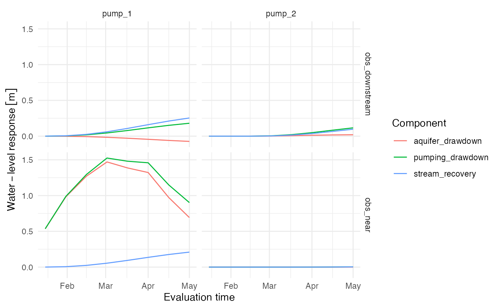

Stream Depletion Apportionment: Detailed Walkthrough
stream-depletion-apportionment-internals.Rmd
library(isw)
#> Loading required package: expint
#> Loading required package: units
#> udunits database from /Library/Frameworks/R.framework/Versions/4.6/Resources/library/units/share/udunits/udunits2.xml
library(units)
library(tibble)
library(dplyr)
#>
#> Attaching package: 'dplyr'
#> The following objects are masked from 'package:stats':
#>
#> filter, lag
#> The following objects are masked from 'package:base':
#>
#> intersect, setdiff, setequal, union
library(ggplot2)
library(sf)
#> Linking to GEOS 3.13.0, GDAL 3.8.5, PROJ 9.5.1; sf_use_s2() is TRUEPurpose and scope
This vignette follows the internal steps used to apportion stream
depletion and calculate aquifer drawdown. It complements the public
workflow in vignette("stream-depletion-apportionment").
Functions called with isw::: are implementation details.
They are shown to make the calculation transparent, but they may change
without the compatibility guarantees associated with exported functions.
Application code should normally call the exported functions
demonstrated in the main vignette.
Inputs
The walkthrough uses the package’s synthetic spatial inputs. There are two pumping wells, two observation wells, and three reaches that meet at a confluence.
pumping_wells <- example_pumping_wells
stream_reaches <- example_stream_reaches
observation_wells <- example_observation_wells
ggplot() +
geom_sf(data = stream_reaches, color = "steelblue", linewidth = 1) +
geom_sf(data = pumping_wells, color = "firebrick", size = 3) +
geom_sf(data = observation_wells, color = "black", size = 3) +
theme_minimal()
The pumping schedule contains a constant interval, a rate reduction,
and a shutdown for pump_1. pump_2 starts later
and then shuts down. Evaluation times are deliberately independent of
these schedule boundaries.
Validate and prepare spatial inputs
The public modeling functions first validate identifiers, geometry types, aquifer properties, physical units, and coordinate reference systems. The analysis requires projected coordinates because its distances must have linear units.
.select_analysis_crs() finds a local UTM CRS from the
combined spatial extent unless the user supplies another projected CRS.
.prepare_spatial_inputs() then transforms copies of every
object to that CRS, drops vertical coordinate dimensions, and supplies a
zero-meter well diameter when none is given.
analysis_crs <- isw:::.select_analysis_crs(
pumping_wells,
stream_reaches,
observation_wells
)
spatial_inputs <- isw:::.prepare_spatial_inputs(
pumping_wells,
stream_reaches,
observation_wells,
analysis_crs = analysis_crs
)
spatial_inputs$analysis_crs$Name
#> [1] "WGS 84 / UTM zone 15N"
spatial_inputs$pumping_wells$well_diam
#> Units: [m]
#> [1] 0 0Discretize the stream network
.discretize_stream_reaches() divides each input reach
into approximately equal segments whose lengths do not exceed
reach_spacing. The active geometry remains the segment
line. A second geometry column, model_point, stores the
along-line midpoint later used as the location of the equivalent
stream-injection well.
reach_segments <- isw:::.discretize_stream_reaches(
spatial_inputs$stream_reaches,
reach_spacing = set_units(100, "m")
)
reach_segments[c(
"reach_id",
"reach_segment_id",
"represented_length"
)]
#> Simple feature collection with 9 features and 3 fields
#> Geometry type: LINESTRING
#> Dimension: XY
#> Bounding box: xmin: 5e+05 ymin: 4979850 xmax: 500350 ymax: 4980200
#> Projected CRS: WGS 84 / UTM zone 15N
#> reach_id reach_segment_id represented_length
#> 1 upstream_1 upstream_1_segment_1 70.71068 [m]
#> 2 upstream_1 upstream_1_segment_2 70.71068 [m]
#> 3 upstream_1 upstream_1_segment_3 70.71068 [m]
#> 4 upstream_2 upstream_2_segment_1 70.71068 [m]
#> 5 upstream_2 upstream_2_segment_2 70.71068 [m]
#> 6 upstream_2 upstream_2_segment_3 70.71068 [m]
#> 7 downstream downstream_segment_1 94.28090 [m]
#> 8 downstream downstream_segment_2 94.28090 [m]
#> 9 downstream downstream_segment_3 94.28090 [m]
#> geometry
#> 1 LINESTRING (5e+05 4980200, ...
#> 2 LINESTRING (500050 4980150,...
#> 3 LINESTRING (500100 4980100,...
#> 4 LINESTRING (5e+05 4979900, ...
#> 5 LINESTRING (500050 4979950,...
#> 6 LINESTRING (500100 4980000,...
#> 7 LINESTRING (500150 4980050,...
#> 8 LINESTRING (500216.7 497998...
#> 9 LINESTRING (500283.3 497991...
ggplot() +
geom_sf(data = spatial_inputs$stream_reaches, color = "grey75", linewidth = 3) +
geom_sf(data = reach_segments, aes(color = reach_segment_id), linewidth = 1.5) +
geom_sf(
data = reach_segments,
aes(geometry = model_point),
shape = 21,
fill = "white",
color = "black",
size = 2.5
) +
geom_sf(data = spatial_inputs$pumping_wells, color = "firebrick", size = 3) +
labs(color = "Reach segment") +
theme_minimal()
Sample each reach segment
sample_reach_segments() represents the shape of each
segment with points at the centers of equal-length intervals.
sampled_length records how much stream length each point
represents. This finer sampling geometry is used only to calculate
spatial weights; it is distinct from the single model_point
used in the drawdown model.
sample_points <- sample_reach_segments(
reach_segments,
sample_spacing = set_units(25, "m")
)
sample_points[c(
"reach_id",
"reach_segment_id",
"sample_point_id",
"sampled_length"
)]
#> Simple feature collection with 30 features and 4 fields
#> Geometry type: POINT
#> Dimension: XY
#> Bounding box: xmin: 500008.3 ymin: 4979858 xmax: 500341.7 ymax: 4980192
#> Projected CRS: WGS 84 / UTM zone 15N
#> First 10 features:
#> reach_id reach_segment_id sample_point_id sampled_length
#> 1 upstream_1 upstream_1_segment_1 upstream_1_segment_1_point_1 23.57023 [m]
#> 2 upstream_1 upstream_1_segment_1 upstream_1_segment_1_point_2 23.57023 [m]
#> 3 upstream_1 upstream_1_segment_1 upstream_1_segment_1_point_3 23.57023 [m]
#> 4 upstream_1 upstream_1_segment_2 upstream_1_segment_2_point_1 23.57023 [m]
#> 5 upstream_1 upstream_1_segment_2 upstream_1_segment_2_point_2 23.57023 [m]
#> 6 upstream_1 upstream_1_segment_2 upstream_1_segment_2_point_3 23.57023 [m]
#> 7 upstream_1 upstream_1_segment_3 upstream_1_segment_3_point_1 23.57023 [m]
#> 8 upstream_1 upstream_1_segment_3 upstream_1_segment_3_point_2 23.57023 [m]
#> 9 upstream_1 upstream_1_segment_3 upstream_1_segment_3_point_3 23.57023 [m]
#> 10 upstream_2 upstream_2_segment_1 upstream_2_segment_1_point_1 23.57023 [m]
#> geometry
#> 1 POINT (500008.3 4980192)
#> 2 POINT (500025 4980175)
#> 3 POINT (500041.7 4980158)
#> 4 POINT (500058.3 4980142)
#> 5 POINT (500075 4980125)
#> 6 POINT (500091.7 4980108)
#> 7 POINT (500108.3 4980092)
#> 8 POINT (500125 4980075)
#> 9 POINT (500141.7 4980058)
#> 10 POINT (500008.3 4979908)
ggplot() +
geom_sf(data = reach_segments, color = "grey65", linewidth = 1.5) +
geom_sf(data = sample_points, color = "royalblue", size = 1.5) +
geom_sf(
data = reach_segments,
aes(geometry = model_point),
shape = 21,
fill = "white",
color = "black",
size = 3
) +
geom_sf(data = spatial_inputs$pumping_wells, color = "firebrick", size = 3) +
theme_minimal()
Calculate static reach apportionment
For each pump and sample point, web-squared apportionment is proportional to the point’s represented length divided by squared pump-to-point distance. Point weights are normalized within each pump and then summed by reach segment. Zero-distance points receive special handling so division by zero cannot occur.
get_stream_reach_apportionment() performs the
preparation, discretization, sampling, weighting, and aggregation steps
together. It also calculates the shortest distance from each pump to
each segment line. That segment distance, rather than the sample-point
distance, is supplied to the analytical response kernel.
stream_apportionment <- get_stream_reach_apportionment(
pumping_wells,
stream_reaches,
reach_spacing = set_units(100, "m"),
sample_spacing = set_units(25, "m"),
method = "web_squared"
)
stream_apportionment |>
st_drop_geometry() |>
group_by(pump_id) |>
summarize(
number_of_segments = n(),
total_fraction = sum(apportionment_fraction),
.groups = "drop"
)
#> # A tibble: 2 × 3
#> pump_id number_of_segments total_fraction
#> <chr> <int> <dbl>
#> 1 pump_1 9 1
#> 2 pump_2 9 1Convert schedules to pumping events
Analytical response functions are linear, so intermittent pumping is
handled by superposition of changes in pumping rate.
.get_pumping_rate_changes() compares each scheduled rate
with the preceding rate, assuming zero pumping before the first row.
Exact zero changes are omitted.
pumping_rate_changes <- isw:::.get_pumping_rate_changes(
pumping_schedules,
pumping_wells
)
pumping_rate_changes
#> # A tibble: 5 × 3
#> pump_id pumping_time pumping_rate_change
#> <chr> [d] [m^3/d]
#> 1 pump_1 0 500
#> 2 pump_1 59 -200
#> 3 pump_1 90 -300
#> 4 pump_2 31 250
#> 5 pump_2 90 -250.get_pumping_response_times() pairs every nonzero change
with evaluation times strictly later than that event. It also calculates
the positive elapsed time used by the analytical kernel. An event
beginning exactly at an evaluation boundary has not yet produced a
response at that boundary.
pumping_response_times <- isw:::.get_pumping_response_times(
pumping_schedules,
pumping_wells,
evaluation_times
)
head(pumping_response_times)
#> # A tibble: 6 × 5
#> pump_id evaluation_time pumping_time elapsed_time pumping_rate_change
#> <chr> <date> [d] [d] [m^3/d]
#> 1 pump_1 2025-01-16 0 15 500
#> 2 pump_1 2025-01-31 0 30 500
#> 3 pump_1 2025-02-15 0 45 500
#> 4 pump_1 2025-03-02 0 60 500
#> 5 pump_1 2025-03-02 59 1 -200
#> 6 pump_1 2025-03-17 0 75 500Evaluate analytical depletion fractions
The Glover response depends on pump-to-stream distance, hydraulic
diffusivity, and elapsed time.
.get_stream_depletion_fraction_lookup() evaluates each
unique pump, segment, and elapsed-time combination once. Repeated event
rows can then reuse the lookup rather than recalculating the same
analytical value.
depletion_fraction_lookup <- isw:::.get_stream_depletion_fraction_lookup(
pumping_wells,
pumping_response_times,
stream_apportionment
)
head(depletion_fraction_lookup)
#> # A tibble: 6 × 5
#> pump_id reach_id reach_segment_id elapsed_time stream_depletion_fraction
#> <chr> <chr> <chr> [d] <dbl>
#> 1 pump_1 upstream_1 upstream_1_segment_1 1 0
#> 2 pump_1 upstream_1 upstream_1_segment_2 1 0
#> 3 pump_1 upstream_1 upstream_1_segment_3 1 0
#> 4 pump_1 upstream_2 upstream_2_segment_1 1 0
#> 5 pump_1 upstream_2 upstream_2_segment_2 1 0
#> 6 pump_1 upstream_2 upstream_2_segment_3 1 0For each event and segment, the package multiplies the signed pumping-rate change by the analytical depletion fraction and the static apportionment fraction. Event contributions are then summed by pump, segment, and evaluation time. The exported function performs these joins and restores explicit zeroes for combinations without a contributing event.
stream_depletion <- get_apportioned_stream_depletion(
pumping_wells,
pumping_schedules,
stream_apportionment,
evaluation_times
)
head(stream_depletion)
#> # A tibble: 6 × 5
#> pump_id evaluation_time reach_id reach_segment_id stream_depletion_rate
#> <chr> <date> <chr> <chr> [m^3/d]
#> 1 pump_1 2025-01-16 upstream_1 upstream_1_segment_1 2.26
#> 2 pump_1 2025-01-16 upstream_1 upstream_1_segment_2 1.19
#> 3 pump_1 2025-01-16 upstream_1 upstream_1_segment_3 0.381
#> 4 pump_1 2025-01-16 upstream_2 upstream_2_segment_1 2.26
#> 5 pump_1 2025-01-16 upstream_2 upstream_2_segment_2 1.19
#> 6 pump_1 2025-01-16 upstream_2 upstream_2_segment_3 0.381Construct the injection time grid
Stream recovery is approximated with piecewise-constant injection at
each segment model point. .get_stream_injection_times()
combines pumping boundaries, evaluation times, and any optional
refinement times. Pumping boundaries are retained even when output is
requested less frequently.
injection_times <- seq.Date(
from = pumping_schedules$t[1],
to = max(evaluation_times),
by = "10 days"
)
injection_grid <- isw:::.get_stream_injection_times(
pumping_schedules,
evaluation_times,
injection_times
)
injection_grid$injection_times
#> [1] "2025-01-01" "2025-01-11" "2025-01-16" "2025-01-21" "2025-01-31"
#> [6] "2025-02-01" "2025-02-10" "2025-02-15" "2025-02-20" "2025-03-01"
#> [11] "2025-03-02" "2025-03-12" "2025-03-17" "2025-03-22" "2025-04-01"
#> [16] "2025-04-11" "2025-04-16" "2025-04-21" "2025-05-01"Depletion is evaluated at all injection boundaries. The negative
arithmetic mean of adjacent endpoint rates becomes the constant
injection rate for that interval.
.get_injection_rate_changes() then converts consecutive
interval rates to change events so the same superposition machinery can
be used for injection and pumping.
depletion_at_injection_times <- get_apportioned_stream_depletion(
pumping_wells,
pumping_schedules,
stream_apportionment,
injection_grid$injection_times
)
internal_injection_schedule <-
isw:::.get_interval_average_injection_schedule(
depletion_at_injection_times,
pumping_schedules
)
injection_rate_changes <- isw:::.get_injection_rate_changes(
internal_injection_schedule
)
head(internal_injection_schedule)
#> # A tibble: 6 × 6
#> pump_id reach_id reach_segment_id interval_start interval_end injection_rate
#> <chr> <chr> <chr> [d] [d] [m^3/d]
#> 1 pump_1 upstream_1 upstream_1_segm… 0 10 -0.288
#> 2 pump_1 upstream_1 upstream_1_segm… 10 15 -1.42
#> 3 pump_1 upstream_1 upstream_1_segm… 15 20 -3.43
#> 4 pump_1 upstream_1 upstream_1_segm… 20 30 -7.14
#> 5 pump_1 upstream_1 upstream_1_segm… 30 31 -9.94
#> 6 pump_1 upstream_1 upstream_1_segm… 31 40 -12.3
head(injection_rate_changes)
#> # A tibble: 6 × 5
#> pump_id reach_id reach_segment_id injection_time injection_rate_change
#> <chr> <chr> <chr> [d] [m^3/d]
#> 1 pump_1 upstream_1 upstream_1_segment_1 0 -0.288
#> 2 pump_1 upstream_1 upstream_1_segment_1 10 -1.13
#> 3 pump_1 upstream_1 upstream_1_segment_1 15 -2.01
#> 4 pump_1 upstream_1 upstream_1_segment_1 20 -3.71
#> 5 pump_1 upstream_1 upstream_1_segment_1 30 -2.79
#> 6 pump_1 upstream_1 upstream_1_segment_1 31 -2.34The public function performs these steps and converts the internal elapsed-day boundaries back to the user’s original time representation.
stream_injection_schedule <- get_stream_injection_schedule(
pumping_wells,
pumping_schedules,
stream_apportionment,
evaluation_times,
injection_times = injection_times
)
head(stream_injection_schedule)
#> # A tibble: 6 × 6
#> pump_id reach_id reach_segment_id interval_start interval_end injection_rate
#> <chr> <chr> <chr> <date> <date> [m^3/d]
#> 1 pump_1 upstream_1 upstream_1_segm… 2025-01-01 2025-01-11 -0.288
#> 2 pump_1 upstream_1 upstream_1_segm… 2025-01-11 2025-01-16 -1.42
#> 3 pump_1 upstream_1 upstream_1_segm… 2025-01-16 2025-01-21 -3.43
#> 4 pump_1 upstream_1 upstream_1_segm… 2025-01-21 2025-01-31 -7.14
#> 5 pump_1 upstream_1 upstream_1_segm… 2025-01-31 2025-02-01 -9.94
#> 6 pump_1 upstream_1 upstream_1_segm… 2025-02-01 2025-02-10 -12.3Superimpose pumping drawdown and stream recovery
get_apportioned_aquifer_drawdown() calculates the direct
Theis response from each physical pumping well to each observation well.
It separately calculates the response from every segment model point
using the injection-rate changes. Both calculations use the aquifer
properties of the originating pump.
Pumping drawdown and stream recovery are reported as positive magnitudes. Net aquifer drawdown is their difference. Results remain separated by pump and observation well so users can inspect contributions before aggregating them.
aquifer_drawdown <- get_apportioned_aquifer_drawdown(
pumping_wells,
pumping_schedules,
observation_wells,
stream_apportionment,
evaluation_times,
stream_injection_schedule = stream_injection_schedule
)
head(aquifer_drawdown)
#> # A tibble: 6 × 6
#> pump_id observation_id evaluation_time pumping_drawdown stream_recovery
#> <chr> <chr> <date> [m] [m]
#> 1 pump_1 obs_near 2025-01-16 0.536 0.000313
#> 2 pump_1 obs_near 2025-01-31 0.988 0.00591
#> 3 pump_1 obs_near 2025-02-15 1.29 0.0239
#> 4 pump_1 obs_near 2025-03-02 1.52 0.0546
#> 5 pump_1 obs_near 2025-03-17 1.48 0.0939
#> 6 pump_1 obs_near 2025-04-01 1.46 0.136
#> # ℹ 1 more variable: aquifer_drawdown [m]
aquifer_drawdown |>
select(
pump_id,
observation_id,
evaluation_time,
pumping_drawdown,
stream_recovery,
aquifer_drawdown
) |>
tidyr::pivot_longer(
cols = c(pumping_drawdown, stream_recovery, aquifer_drawdown),
names_to = "component",
values_to = "water_level"
) |>
ggplot(aes(evaluation_time, water_level, color = component)) +
geom_line() +
facet_grid(observation_id ~ pump_id) +
labs(
x = "Evaluation time",
y = "Water-level response",
color = "Component"
) +
theme_minimal()